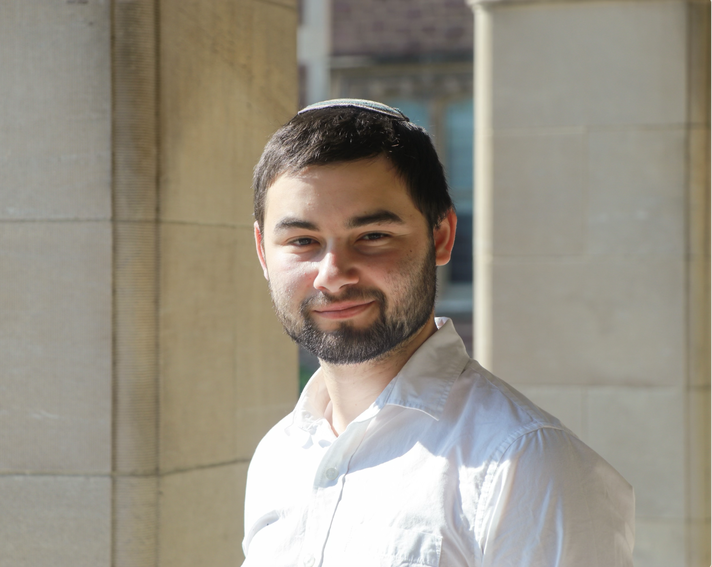

INVITED TALK
2025: Helfand, Zachary J. and Van Engen, Kristin. False hearing in L2-accented sentences. poster at Acoustical Society of America, New Orleans, LA. View PDF

ABOUT
Hi, I'm Zach!
I am a linguistics PhD student at Rutgers University (entered 2025). I am a phonologist specializing in non-concatenative morphology, particularly root-and-patterm morphology and infixation. I am curious about how our phonological grammar can map abstract underlying forms of morphemes to discontiguous surface realizations. I am also interested in how those abstract underlying forms can be learned. Additionally, some of my past research has investigated the effects of accent in speech perception.
RESEARCH
Phonology, Non-concatenative Morphology, Computational Linguistics, Speech Perception, Semitic Languages
INVITED TALK
2025: Helfand, Zachary J. and Van Engen, Kristin. False hearing in L2-accented sentences. poster at Acoustical Society of America, New Orleans, LA. View PDF
CONFERENCE POSTER
2024: Helfand, Zachary J., Dispatches on the Processing of Accented Speech. Brown Bag, Behavior, Brain & Cognition, Department of Psychological & Brain Sciences, Washington University in St. Louis
CURRICULUM VITAE
DUMMY TEXT
View CV (PDF) ↗